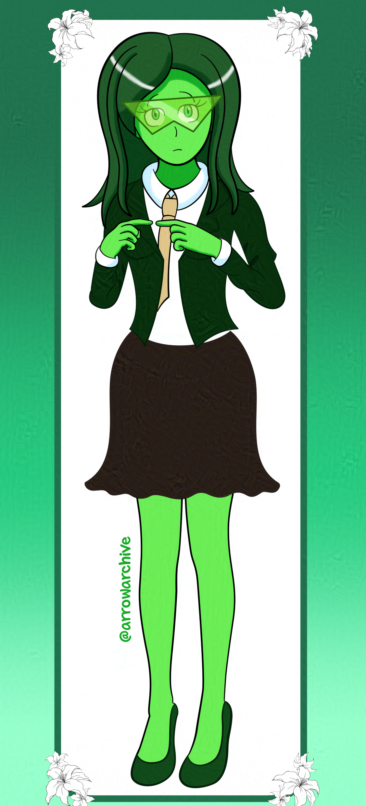
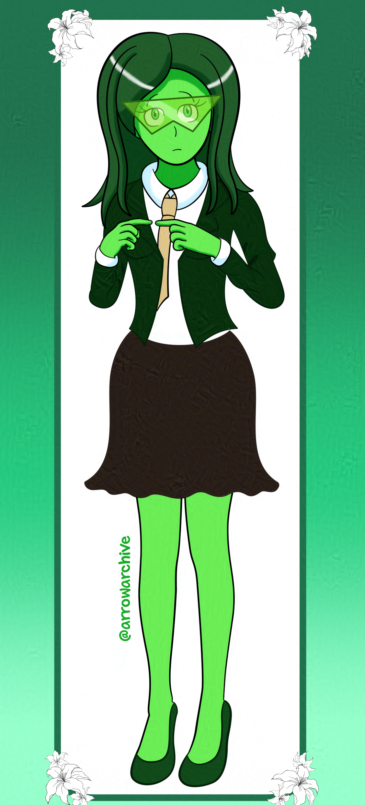

Chlora Doodles
 



Do you ever have that one character or one idea you want to expand upon, but aren't motivated to expand upon it? For me, Chlora is that character.
Don't get me wrong, I like her design, but I don't draw her as much as the others. I don't know why that is, but I wanted to draw her again.
She's one of the few characters I haven't drawn at all this year, and I wanted to rectify it. I made a few changes to her outfit and touched up her hair while giving her a casual outfit in the third picture. Her tie lacks the star emblem it usually has, but I don't include the star in practice doodles.
Maybe I don't draw her as much because she doesn't have as much personality as the others? I don't know, but I used this drawing to practice with folds in clothing. I haven't decided on her skirt length, but I have a feeling it will be the same length as Aqua's.
Maybe if I check my notes for her and redesign Jade, I can give her more spotlight. That said, she was front and center in my relic song piece, so I'm not sure why I draw her less. I'm happy with her current design, but I want to fix that. Someday, somehow, she'll be in more of my work.